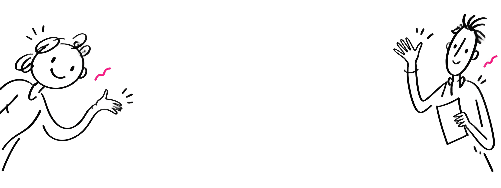

KindForm.
Forms, with a human touch.
A little less work. A lot more possibility.
Make beautiful forms that feel like a conversation.
No account needed to explore

YOUR NEXT GOOD THING
Let's make something
good together.
A small idea can turn into something wonderful.
Tell us a little about yours.
Good things start here.
A blank page.
A very good place to start.
Write a question, add a few choices, and make it yours.
Sometimes simple is everything you need.
Feels like writing a note.
Clear questions. Room to breathe. No busy setup between you and your next idea.
Try a complete formWhat's on your mind?
A new idea, a quick question, a little curiosity...
For whatever
you're working on.
Start with a question. See where it takes you.
A good form.
A great beginning.
Your next idea deserves a little space.
Let's make it happenA few things to know.
Can I try it without signing up?
Yes. The form above is interactive, and the workspace has a complete three-step workshop registration demo.
Where do my answers go?
This sample runs in your browser. It does not send form answers or publish a live form. The workshop demo can export a local registration record.
Can I use this for my own project?
Yes. KindForm includes reusable source and a frontend design skill. It is an independent project inspired by Tally's visual language, with original branding, text, and illustrations.